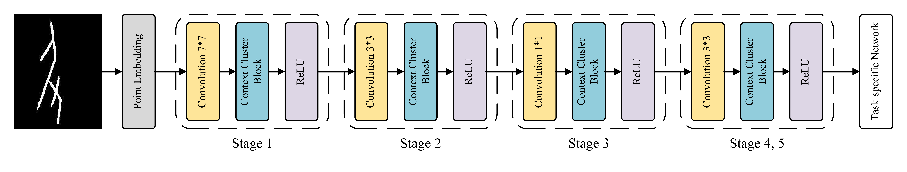

OraclePoints: A Hybrid Neural Representation for Oracle Character
Proceedings of the 31st ACM International Conference on Multimedia (ACM MM '23), DOI: https://doi.org/10.1145/3581783.3612534
Runhua Jiang1, Yongge Liu2,3, Boyuan Zhang1, Xu Chen1, Deng Li1, Yahong Han1, Member, IEEE
1. College of Intelligence and Computing, Tianjin University
2. School of Computer and Information Engineering, Anyang Normal University
3. Key Laboratory of Oracle Bone Inscriptions Information Processing, Ministry of Education
Abstract
Oracle Bone Inscriptions (OBI) are ancient hieroglyphs originated in China and are considered one of the most famous writing systems in the world. Up to now, thousands of OBIs have been discovered, which require deciphering by experts to understand their contents. Experts typically need to restore, classify, and compare each character with previous inscriptions. Although existing research can assist with one of these operations, their performance falls short of practical requirements. In this work, we propose the OraclePoints framework, which represents OBI images as hybrid neural representations comprising features of images and point sets. The image representation provides inscription appearance and character structure, while the point representation makes it easy and effective to distinguish characters and noises. In addition, we demonstrate that OraclePoints can be easily integrated with existing models in a plug-and-play manner. Comprehensive experimentations demonstrate that the proposed hybrid neural representation framework supports a range of OBI tasks, including character image retrieval, recognition, and denoising. It is also demonstrated that OraclePoints is helpful for deciphering OBI by linking ancient characters to modern Chinese characters.
Motivation
Fig. 1. Top: An illustration of our motivation. Difficulty of handling scanned inscriptions is to distinguish character from noise. Both of them are comprised of pixels with diverse patterns. Bottom: Results of the proposed framework. By representing oracle image as a set of points, the hybrid representation enables robust retrieval and recognition of scanned character images that are affected by random noise, exhibit different styles (i.e., the right result in the top line) and contain large blank spaces (i.e., the left image in the second line). In addition, character structures in degraded images can be effectively restored by identifying discrete noises and restoring local structure for each point set. Notably, the hybrid representation also facilitates the matching of modern Chinese to ancient oracle characters.
Framework Architecture
|  |
|---|
Fig. 2: Overview of the proposed OraclePoints. It utilizes five stages to extract point representations for the task-specific network.
Fig. 3: A context cluster block for learning neural representations of point sets. By the point embedding transformation, the input image is transformed to multiple point sets. Then, each of them is initialized with a center point. Features of these clustered points are aggregated to the center point, and then dispatched within a cluster to obtain point representations.
Results
 |
|---|
Fig. 4: Handwritten-to-scan image retrieval.
 |
|---|
Fig. 5: Unsupervised domain adaptation recognition of oracle characters.
Fig. 6: Oracle character image denoising.
Fig. 7: Mordern-to-ancient Chinese matching.
Citation
If you find this useful in your work, please consider citing the following reference:
@inproceedings{jiang2023oraclepoints,
title={OraclePoints: A Hybrid Neural Representation for Oracle Character},
author={Runhua Jiang, Yongge Liu, Boyuan Zhang, Xu Chen, Deng Li, Yahong Han},
booktitle={Proceedings of the 31st ACM International Conference on Multimedia},
year={2023}
}
Any question regarding this work can be addressed to ddghjikle1@gmail.com.